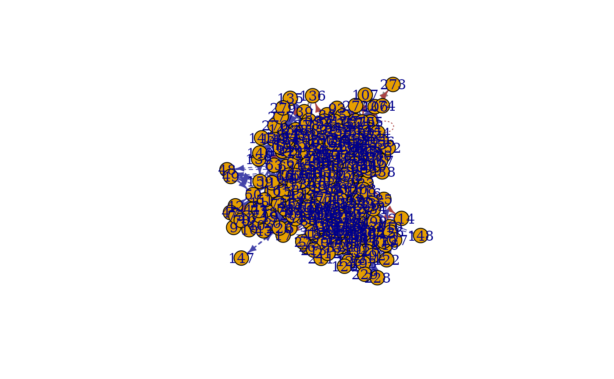

C.Elegans networks consist of the chemical synapses network and the electrical synapses network of the roundworm, where each of 279 nodes represents a neuron and each edge represents the intensity of synapses connections between two neurons.
data(C.Elegans)An object of class list of length 2.
Two networks are weighted and directed graphs with self-loops. There are 2194 and 1031 edges in two graphs respectively and the empirical Pearson's correlation between two graphs is 0.17. Two networks are stored in a list in the form of igraph objects, where the first network in the list is the chemical synapses network and the other one is the electrical synapses network.
Chen, L., Vogelstein, J. T., Lyzinski, V., & Priebe, C. E. (2016). A joint graph inference case study: the C. elegans chemical and electrical connectomes. Worm, 5(2), e1142041.
Sulston, J. E., Schierenberg, E., White, J. G., & Thomson, J.N. (1983). The embryonic cell lineage of the nematode caenorhabditis elegans. Developmental biology, 100(1):64–119.
data(C.Elegans)
g1 <- C.Elegans[[1]]
g2 <- C.Elegans[[2]]
plot(g1, g2)
#> This graph was created by an old(er) igraph version.
#> Call upgrade_graph() on it to use with the current igraph version
#> For now we convert it on the fly...
#> This graph was created by an old(er) igraph version.
#> Call upgrade_graph() on it to use with the current igraph version
#> For now we convert it on the fly...
